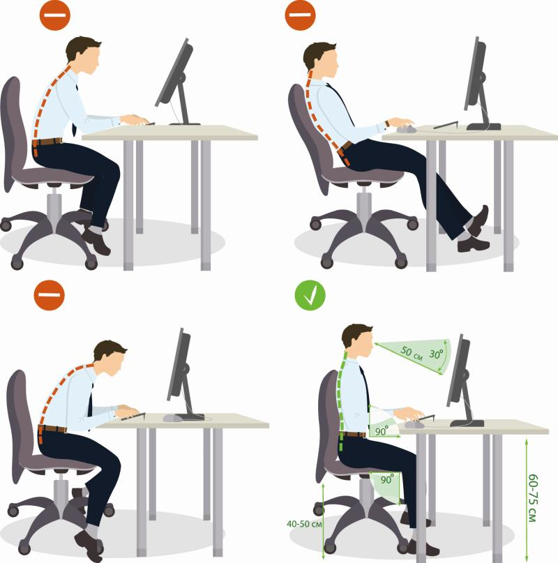
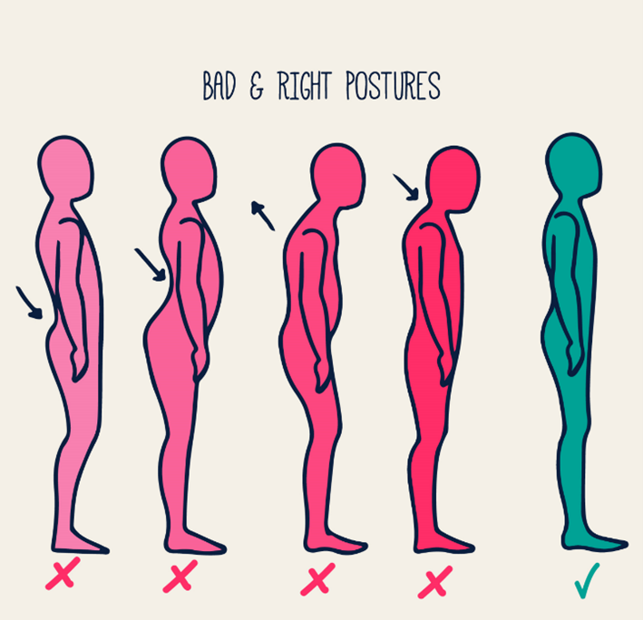

Postural Resources
Poor posture often stems from modern-day habits like working in front of a computer, slouching on a couch
while watching TV, or looking down at a smartphone.
It does not always cause discomfort, but over time it can place excessive strain on muscles, soft tissues and even
bones, which could eventually lead to, for example, trouble walking or breathing.
Common Mistakes and Fixes
How to sit with proper posture:

- Sit up with back straight, shoulders back, and buttocks touching the back of the chair.
- Distribute the body weight evenly on both hips.
- Bend knees at a right angle. Keep your knees even with or slightly higher than hips. Do not cross legs.
- Keep feet flat on the floor.
- At work, adjust chair height and workstation so that you can sit up close to your work and tilt it up
toward you. Rest elbows and arms on the chair or desk, keeping shoulders relaxed.
How to stand with proper posture:

- Stand up straight and tall.
- Keep shoulders back and relaxed.
- Pull your stomach in.
- Keep feet about hip distance apart.
- Put your weight mostly on the balls of your feet and balance your weight evenly on both feet.
- Try not to tilt your head forward, backward, or sideways.
- Keep your legs straight, but knees relaxed.
Don't forget to move around if you are sitting or standing in the same position for more than 30 minutes!